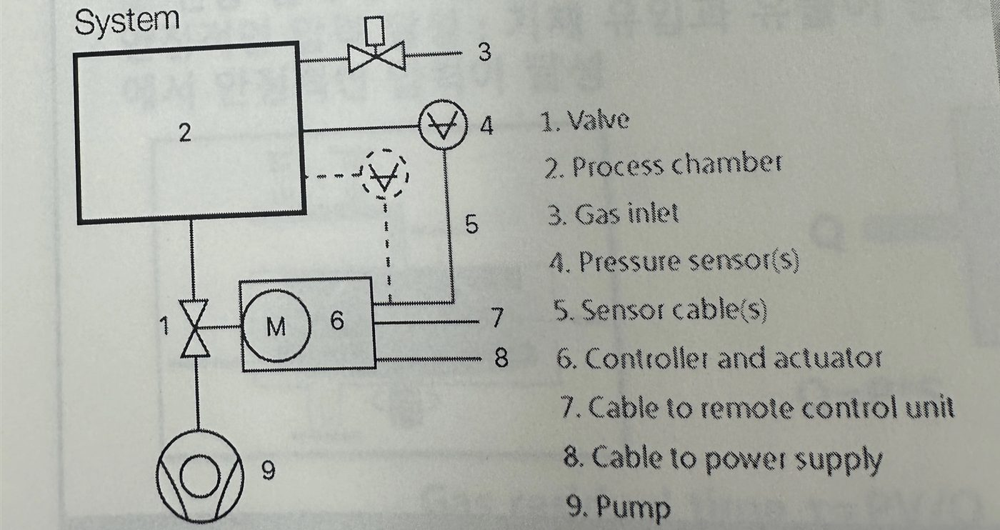
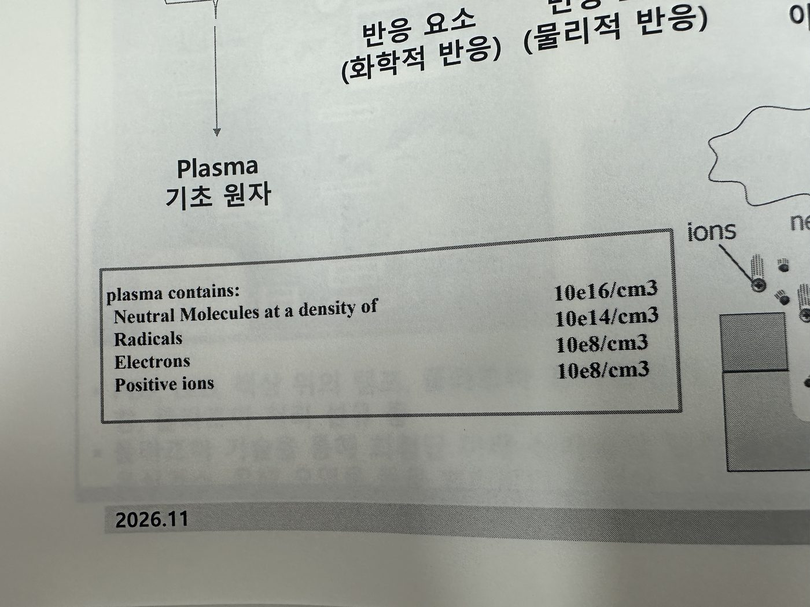
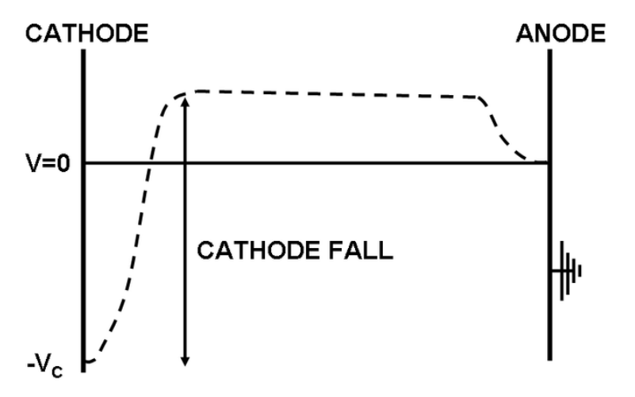
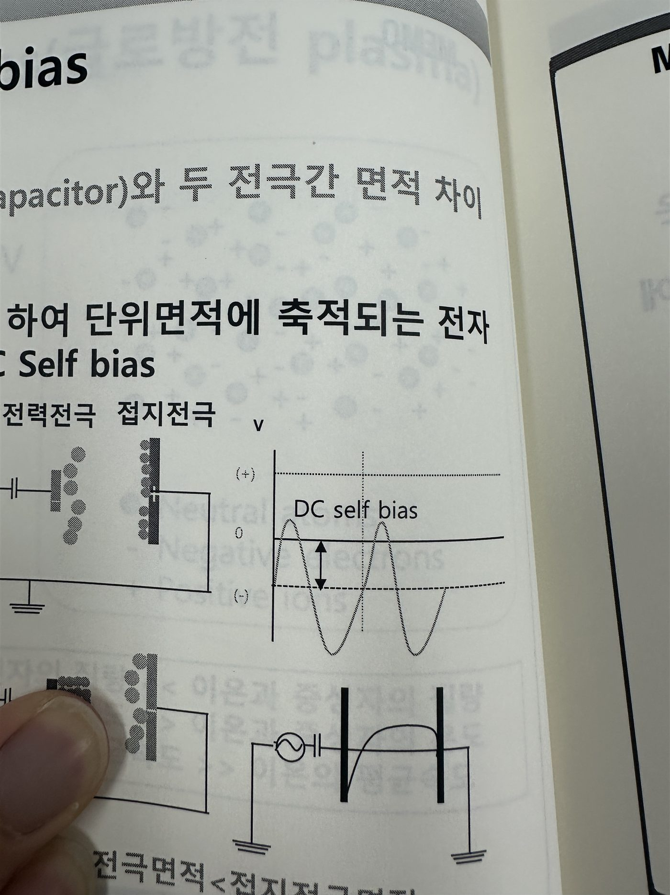
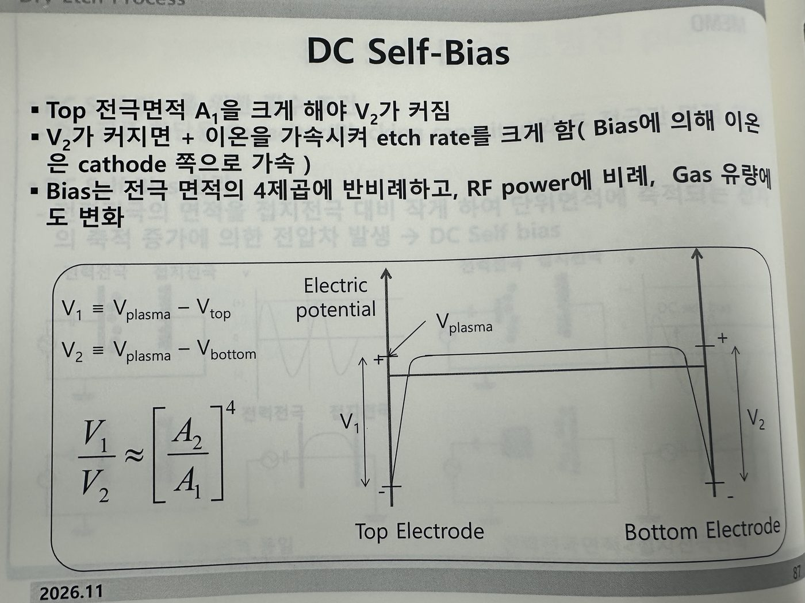
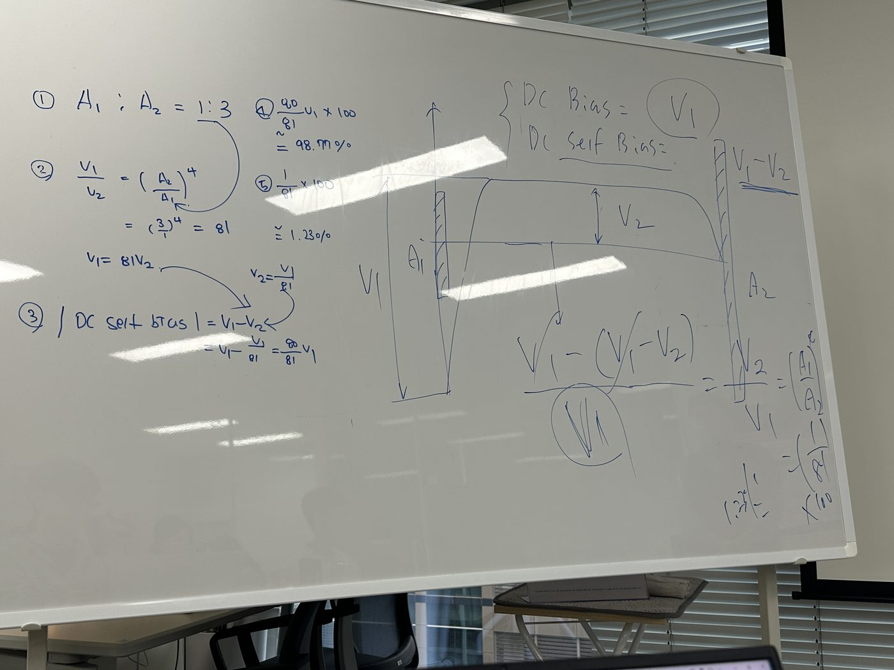

더인 교육 6일차
Dry Etch 공정 · Dry Etch vs Wet Etch · Plasma · Volatility of Etching Product · Boiling Point · Etch Parameter · 식각 이후 현상 · 기체의 운동에너지와 온도 · Gas Flow Type · Conductance · Pumping Speed and Throughput · Residence Time (챔버 잔류시간) · 진공 (Vacuum) · Electrostratic Chunk (ESC) · Plasma (정의와 방전) · Plasma 조건 3가지 · Plasma를 사용한 공정들 · Plasma 발생 원리 · Plasma 방전 슬라이드 (67 · 68 · 70 · 72 · 74 Slide) · Presheath · Sheath · 이온화 에너지 · 파셴의 법칙 · RF Plasma와 DC Self-bias (Q&A · 87pg · 토론 문제)
1. Dry Etch 공정
- 기체 또는 액체 etchant 사용해서 불필요한 부분을 선택적으로 식각
- 과거 Wet etch → 미세화 이후 Dry etch
- Etching 진행 시에 측벽 보호하기 위한 polyme가 존재. 따라서 PR mask도 Ashing을 통해 제거해주고, 유기물, 부산물 등을 Cleaning을 통해 없애준다.
2. Dry Etch vs Wet Etch
- Wet Etch가 선택비도 좋고, 속도도 빠르다. 하지만 등방성 식각이며 2 µm 이상에만 가능하다.
- Dry Etch는 식각의 방향성이 좋고, 종료점(End point) 검출이 용이하다. 하지만 선택비가 낮다. 그 말은 Etch를 막아주는 Mask Layer가 제 역할을 하지 못한다. 그리고 진공에서 Plasma를 활용하기 때문에 라디칼이 생기게 된다.
→ Wet Etch는 조절할 수 있는 공정 파라미터가 농도, 온도 뿐인데, Dry Etch는 조절 가능한 파라미터가 많다.
3. Plasma
- Plasma를 이용해서 Etch를 진행할 때 양이온과 라디칼을 사용한다.
- 그래서 결국 높은 종횡비를 얻을 수 있다.
- RIE를 사용해야지 Plasma를 활용하는 Etching의 최대 효율을 뽑아낼 수 있다.
- 증기압이 높은 반응물 = 휘발성이 높은 물질 → Dry Etch에서는 이래야 식각이 잘되기 때문이다.
대상: “증기압이 높은 반응물 = 휘발성이 높은 물질”
기체가 되어야 하는 것 까지는 이해했었는데 이렇게 용어 정리해갈 수 있어서 좋다.
4. Volatility of Etching Product
휘발성이 높아야 식각이 잘 된다.
- SiF₄ 자체는 증기압이 높고, 휘발성이 크다
- CuCl는 증기압이 낮고, 휘발성이 낮기 때문에 식각이 되지 않는다.
→ 그래서 다마신 공정을 쓴다.
5. Boiling Point
- B.P가 낮은게 유리. 예를 들면 WCl₆ 346.7℃ 이고 WF₆ 17.5℃ 이니까 WF₆를 만드는게 Etching이 더 잘되겠다고 생각할 수 있다.
→ 꼭 식각을 해봐야지만 알 수 있는게 아니고 B.P를 통해서도 알 수 있다고 말할 수 있으면 좋을 듯
6. Etch Parameter
(1) Etch Rate
- Throughpout을 늘리기 위해서는 식각속도가 빠른게 좋겠지만, 식각속도가 너무 빠르면 조금만 컨트롤해도 변동성이 커지는 단점이 있다.
(2) Selectivity (선택비)
- 선택비가 크면 내가 원하는 부분만 etching을 잘할 수 있다는 의미이다.
(3) Anisotropy (이방성)
- A=1-rₕ/rᵥ (h가 수평이고, v가 수직)
대상: “A=1-rₕ/rᵥ (h가 수평이고, v가 수직)”
이방성 수식으로도 설명할 수 있도록 챙겨가기
- A가 1에 가까울수록 이방성에 가깝고, 1에 작아질수록 등방성이 된다.
왜 Overetch를 해줘야하는가?
- Underetch(Etch가 덜 된 상태) → Just etch → Overetch
- 필름의 최초 상태가 완전히 평탄하지 않기 때문에 Overetch를 통해 조금 더 식각해주면서 평탄화를 시켜준다.
(4) Uniformity (균일도)
- Lot 간의 균일도, 각 Wafer 간의 균일도, Wafer 내에서의 균일도를 전부 따진다.
- error를 줄이기 위해서는 Wafer 내의 여러 point를 찍어서 확인해봐야한다.
(5) Asepect Ratio (종횡비)
7. 식각 이후 현상
(1) Etch Bias (식각 편차)
= ADI(After Development Inspection) - ACI(After Cleaning Inspection)
→ Photo 이후 - Etch 이후 의 차이나는 정도를 말함
(2) Undercut
- 등방성 식각
(3) Bowing
- 비스듬히 이온이 입사하며 측벽이 휘어지는 현상
(4) 마이크로-Trench
- 미세한 구멍 발생
(5) 펜싱-Fencning
- 식각 후에 폴리머가 패턴을 감싸는 현상
(6) Charging Effect (대전 효과)
- 식각하면서 Wafer에 전하가 축적되는 현상
(7) Damage
- 말그대로 손상
→ 왜 이런 현상이 일어나는지 이해를 해야지 단순히 암기하면 까먹을걸?
8. 기체의 운동에너지와 온도
- 기체는 온도가 높을 수록 평균속도가 빠르고, 질량이 적을수록 평균속도가 빠르다.
- 전자의 에너지가 커지면 어느 순간부터는 충돌 확률이 낮아지게 된다.
- M.F.P는 압력이랑 반비례한다. 입자가 많을수록 충돌 없이 이동하기가 어렵기 때문이다.
9. Gas Flow Type
- Viscous Flow (점성 유동): 압력이 높아 기체 분자끼리의 충돌이 벽과의 충돌보다 지배적인 유동입니다.
- Transition Flow (전이 이동): 기체 분자 간 충돌과 벽면 충돌이 모두 중요하게 작용하는 중간 영역의 유동입니다.
- Molecular Flow (분자 유동): 압력이 낮아 분자끼리의 충돌보다 진공 용기 벽과의 충돌이 지배적인 유동입니다.
10. Conductance
- 진공시스템에서도 Gas를 얼마나 잘 이동시킬 수 있는지 능력을 말한다.
- 진공 배관은 가늘고 길게 만들면 컨덕턴스가 급격히 떨어져서, 두껍고 짧게 연결한다.
직렬 연결 → 1/C = 1/C₁ + 1/C₂ + …
병렬 연결 → C = C₁ + C₂ + …

11. Pumping Speed and Throughput
- Q = PS
→ Q는 처리량으로 단위 시간에 흐르는 기체의 양이다. P는 기호 그래도 압력이고, S는 배기 속도(Pumping speed)로 단위 시간에 빼내는 기체의 부피이다.
- sccm: Standard cc per minutes
12. Residence Time (챔버 잔류시간)
τ: 분자가 챔버로 들어와서 다시 나가기까지 머문 시간을 말한다.
- 당연하게도 시간이 짧으면 기판과 반응할 시간이 적고, 너무 길면 반응가스가 부족해지거나 반응 부산물과의 재반응을 일으키게 된다.
- τ = V/S
- τ = PV/Q
- 기체의 부피
13. 진공 (Vacuum)
- 압력은 Torr, mTorr 단위를 많이 사용하니까 인지하고 있어라.
- 기체의 밀도를 구해보자! 0℃ 1기압에서 1mol 이 차지하는 부피는 22.4L 이다.
- 1 Torr를 계산하면 3.5×10¹⁶ molecules/cc 가 나온다.
- 1mTorr 내부에서는 3.5×10¹³molecules/cc가 나오고, μm³에서는? 35 개?
→ 1 cc = 1 cm³ 이고, 1 cm = 10⁴ μm 이므로 1 cc = (10⁴)³ = 10¹² μm³ 이다. 그래서 10¹²로 나눠주면 된다.
대상: “1 cc = 1 cm³”
이런거 아무것도 아닌데 왜 멈칫하냐 이거야
내가 생각할 때는 진공 범위 정도만 알면 될 것 같다.
- 결국 대부분의 진공을 사용하는 펌프는 고진공을 사용하고 그 범위는 10⁻³~10⁻⁷ 정도 된다. → Sputtering, LPCVD, Plasma Etch, …
- 초고진공은 10⁻⁷~10⁻¹⁰ 정도 된다. → Thin Film, TEM, …
그리고 각 진공 정도에 따라 사용하는 장비 차이 정도까지 챙겨가면 되지 않을까? (44pg)
14. Electrostratic Chunk (ESC)
- 진공상태에서는 정진기력을 이용해서 Wafer를 잡는다. 그걸 Electrostratic Chunk (ESC) 이라고 함.
- 진공으로 웨이퍼 뒷면을 진공으로 잡는 것은 Wafer위에서 눌러주는 대기압을 활용하는 것이다. 그래서 챔버 자체가 진공이면 진공척으로 Wafer를 잡을 수는 없는 것이다.
- 결국 ESC도 정전기력을 사용하는 것이기 때문에 C=εA/d 이 식과 연결되어있다.
- ESC 척은 센서와 연결되어 Wafer의 온도를 균일하게 컨트롤 할 수 있게 만들어준다.
15. Plasma (정의와 방전)
- 디바이 차폐를 만족하는 이온화된 기체를 말한다.
→ 디바이 차폐: 플라즈마 상태에서 전하를 띤 이온이 있을 때 반대 전하 이온들이 모여들어 전기장을 상쇄하고 가려주는 현상
- 플라즈마가 중성을 유지하려는 성질과 관련있다.
- 기체에 충분한 에너지를 가해서 방전을 시켜준다. 방전은 기체 분자가 이온과 전자로 분리되는 이온화 현상이 일어남
→ 여기(→발광), 해리(→라디칼), 이온화 ….
- 라디칼은 방향성이 없어서 어디에든 가서 반응하게 됨.
- 결국 총 전하량은 중성이지만 이온들이 존재한다. 그래서 준중성 상태라고 하는데, 음전하를 띤 전자와 양전하를 띤 이온의 수가 거의 동일하다.
16. Plasma 조건 3가지
대상: “Plasma 조건 3가지”
여기 부분 이해가 안돼
(1) 디바이 길이가 시스템의 길이보다 작아야 함
(2) 디바이 구 내부 입자수가 1보다 충분히 커야 함
(3) 플라즈마 진동수가 충돌 진동 수 보다 커야 함
17. Plasma를 사용한 공정들
- Plasma Dry Etching
- Plasma Enhanced Chemical Vapor Deposition
- Plasma Immersion Ion Implantation
- Plasma sources of UV radiation for lithography (Hg lamps to EUV)
- Plasma Cleaning
18. Plasma 발생 원리
- 양이온과 전자는 꼭 일대일은 아니더라도 비슷하다는게 준중성을 의미함
- 결국에는 전자가 이온(물리적 반응), 라디칼(화학적 반응)을 만드는 것
- 이온보다 라디칼이 많은데, 이온은 전자가 강하게 부딪혀야 생기기 때문이다. 라디칼은 그보다 낮은 에너지로도 발생하기 때문이다.

- 플라즈마에서 이온화가 되는 정도는 매우 낮다.
- 중성입자가 제일 많고 그 다음으로 라디칼이 많다. 라디칼은 수는 양이온 수가 꽤 많이 차이 난다. 이 때 양이온수가 전자수와 동일하기 때문에 준중성이라고 하는 것이다.
- 라디칼은 플라즈마에 의해 분해가 되면서 발생한다.
- Positive ion이 Negative ion 보다 많다고 한다.
19. Plasma 방전 슬라이드 (67 · 68 · 70 · 72 · 74 Slide)
67slide
- 비탄성 충돌에 의해서 이온화가 일어난다.
- 플라즈마가 유지된다는 것은 방전 상태가 유지되는 것을 말한다.
- 실제로는 전자들이 벽에 부딪혀서 소실되기도 한다.
- 전자와 양이온이 부딪혀서 결합하면서 소실되기도 한다.
68slide
(1) Dark Discharge
- 초반에는 Dark Discharge가 일어난다. 왜냐하면 충분한 전자가 형성되어 있지 않아서 전체적으로 어두운 상태이다.
- 항복전압을 넘게 되면 Glow Discharge 영역으로 넘어가게 된다.
(2) Glow Discharge - Glow: 빛을 내다.
- Voltage 자체는 그렇게 높지 않아도 방전상태를 유지할 수 있다.
(3) ARC Discharge
- 이건 뭔데?
70slide
- DC Glow Discharge
- Positive column 영역이 가장 크다. 사진을 보면 알겠지만 듬성 듬성 플라즈마를 갖고 있다.

72slide
- Sheath 영역에 대해서는 확실히 잡고 넘어가자.
- Sheath 영역에서는 ‘준중성’ 이 깨진 상태를 말한다.
→ 그냥 준중성은 양이온과 음이온이 같은 상태라고 이해하면 될 듯
- Presheath는 plasma와 sheath 영역의 중간 지점을 의미한다. 너무 급격하게 가속이 되지 않게 해주는 역할을 한다.
→ 딥하게 이해하지 말고 그래야 안정한 sheath가 유지된다고 하면 될 듯함.
- 음극 바로 앞 양이온들에 의해 전압 강하가 일어난다.
→ 기판은 음극이고 sheath 영역에는 양이온이니까 그렇겠지
74slide
- 전자는 sheath 영역을 돌아서 나오는데, 이 때 그냥 나오는게 아니고 에너지를 얻으면서 나오게 되는 것이다.
Q. 왜 DC Glow discharge에서 Anode의 전압이 양수가 아닌가?
A. 상대적으로 음극이 -전압이면 되는 것이기 때문에 Anode가 0일 수 있다.
20. Presheath
- Bohm velocity 이상의 속도를 가져야 sheath 영역으로 안정적으로 갈 수 있다.
21. Sheath
- 공부할 때 음극 sheath만 공부하고 끝! 하지 말고 양극 sheath도 공부 한 번 하고 넘어가자
- 보면 양극 앞쪽에서도 sheath가 발생하긴 하지만 양극 Sheath를 활용하는게 아니다. 전위차도 별로 안
- 음극 sheath 영역에서는 전자 밀도가 거의 0이다. 그래서 거의 이온만 흐르게 된다.
- 결국 (+) 이온들이 때릴텐데 이걸 Ion Bombardment Effects가 일어난다고 한다. 그리고 Ion Bombardment Effects이 일어나면 2차전자가 튀어나온다.
22. 이온화 에너지
- 이온화 확률이라는 것은 전자의 에너지가 클수록 무조건 좋은게 아니다. 100eV 전자의 속도가 너무 빨라서 충돌 확률이 감소한다.
23. 파셴의 법칙
대상: “파셴의 법칙”
이렇게 대충 체크하고 넘어갈 내용이 아님
- 플라즈마 방전을 일으키는데 필요한 전압과 전극과의 거리와 압력이 같이 고려되어야 한다.
24. RF Plasma와 DC Self-bias (Q&A · 87pg · 토론 문제)
Q. RF Plasma가 필요한 이유?
A. 전도체인 경우에는 DC를 사용해도 상관없지만 부도체를 사용하면 플라즈마가 없어져 버린다.
RF Glow Discharge

- DC 대비 이온화율이 10~100배 만큼 좋다.
- DC Self Bias가 생기고, 그래서 wafer 표면에 ion 가속, 충돌에 의한 etch 가능
→ DC Bias를 따로 걸지는 않았지만 생기는 현상을 말한다.
→ RF에서 두 전극이 같았더라면 DC Self Bias가 생기지 않았을 것임
Blocking capacitor
대상: “Blocking capacitor”
내가 궁금했던 것이니까 복습할 때 다시 봐보기
- 전자가 가벼우니까 Je>>Ji (J는 Flux)
- 면적 차이를 크게 둬야지 DC Self-bias가 크게 생기고, 전압 강하가 크게 일어나서 Ar⁺이 이방성 식각이 일어날 수 있다.
Q. DC Bias랑 DC Self-bias의 궁극적인 차이는?
A. DC는 그냥 건 상태이고, DC Self-bias는 RF 파워를 걸었을 때 생기게 되는 상태.
Q. DC Self-bias가 생기는 이유는?
A. RF Plasma에서는 자기바이어스 효과가 나타납니다. 자기바이어스 효과는 전극의 극성이 바뀜에 따라 단위면적당 전극으로 유입되는 양이온의 수와 전자의 수가 다르기 때문에 나타나는 것입니다. 전극이 음의 전위를 가질 때, 전극으로 유입되는 양이온의 수보다, 양의 전위를 가질 때, 작고 가벼운 전자가 더 빠른 속도로 많은 양의 전자가 전극으로 유입되기 때문에 전체 평균 전위가 음의 전위를 가지는 자기바이어스 효과가 나타납니다. 그래서 교류전압을 인가함에도 자기바이어스 효과에 의해 DC Plasma에서 cathode에 sheath 영역이 생기는 것과 같은 효과가 RF Plasma에서 일어난다고 할 수 있습니다.
87pg

- Bias는 전극 면적의 4제곱에 반비례한다. 전극의 면적을 작게 할 수록 DC Self bias가 크게 걸린다.
대상: “→ 여기에서 좌측이랑 우측이 같을 이유는 없을 듯한데?”
여기 복습하면서 다시 체크해보기
토론 문제
전극 면적 비율이 1:3이라면 DC bias와 DC Self bias의 차이는?

- 이해가 정말 안되긴 하는데, 결국 그냥 DC bias는 v₁으로 차이인 것이고, DF self bias는 v₂-v₁ 라는 거잖아?
- DC bias는 벌크랑 왼쪽 전극 사이의 평균 전위 차이라는 것이고, DC Self bias는 접지 기준 오른쪽은 ground state 니까 그 차이가 v₂-v₁가 되는 것이고……